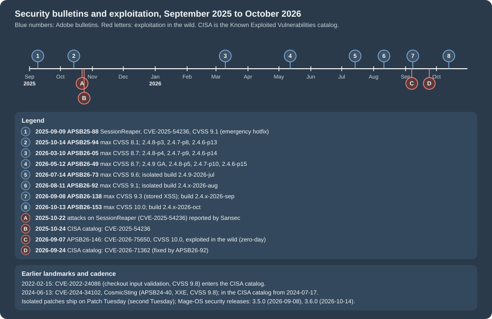

Security
|
This content was generated with the assistance of AI and should be verified against the official documentation before being relied on in production. |
This page was written against Magento Open Source 2.4.9 (general availability 2026-05-12, standard support until 2029-05-31), Adobe Commerce 2.4.9 and Mage-OS 3.6.0 (released 2026-10-14, based on Magento 2.4.9), and it was checked on 2026-10-27. It covers the three self-hosted editions in detail and says where Adobe Commerce on cloud infrastructure and Adobe Commerce as a Cloud Service (ACCS) differ. The security model of this platform has two halves. The first half is operational: Magento is a large PHP code base that a merchant or an agency installs, patches and runs, so most real compromises come from unpatched core code, weak Admin access and unreviewed third-party extensions. The second half is code: every module added to the shop can open the same holes that the core closes. The page therefore goes from the patch process and the vulnerability history, through the Admin, transport and Content-Security-Policy settings, to the secure coding rules for module developers, and ends with scanning and incident response.
It follows the pages on module anatomy, on
plugins, events and observers and on
REST and GraphQL APIs, whose webapi.xml and authentication it refers to, and it
precedes the pages on testing, coding standards and the
Marketplace and on upgrades. Token types and their lifetimes are in
API authentication; the payment-specific rules are in
checkout and payments.
The running example is Pocket Coffee, the small coffee shop of this section. The page builds a module, PocketCoffee_Security,
around the pieces a shop of that kind really needs: a signed server-to-server "order paid" notification from a payment provider, a
Coffee Club sign-up form protected against CSRF, a roast date badge that has to escape what it prints, three REST routes with three
authorization levels, an encrypted shared secret in the configuration, a Content-Security-Policy whitelist, and a console command
that shows the framework helpers for hashing, encryption, escaping and signed tokens. Every example was installed in the local
Mage-OS 3.6.0 store (PHP 8.5.12, MariaDB 11.8, OpenSearch 3, Valkey 9, developer mode) and exercised with curl and the console; the
results are quoted after each one. The parts that could not be run are listed in What was run and what was not.
Who is responsible for what
Security is a shared task, and the share depends on the edition. The table lists who applies code patches and who runs the infrastructure. The statements about Adobe Commerce on cloud infrastructure come from Adobe’s shared responsibility model; the statements about the other editions follow from how they are delivered.
| Edition | Core code patches | Servers, PHP, database, search, cache | Custom code and extensions |
|---|---|---|---|
Magento Open Source |
The merchant applies security patch releases and isolated patch files that Adobe publishes for Open Source too (see Patch types and cadence). Extended support security patches are Adobe Commerce only. |
The merchant or the hosting provider, including end-of-life dependencies (MySQL 8.0 reached end of support on 2026-04-30). |
The merchant. |
Mage-OS |
The merchant installs Mage-OS releases (3.5.0 on 2026-09-08 and 3.6.0 on 2026-10-14 were security releases). Mage-OS is a distribution built on the Open Source code base, not a patch channel of Adobe. |
The merchant or the hosting provider. |
The merchant. |
Adobe Commerce on-premises |
The merchant applies security patches, isolated patch files and hotfixes; the Quality Patches Tool delivers hotfixes and quality patches. |
The merchant. |
The merchant. |
Adobe Commerce on cloud infrastructure |
Adobe ships Cloud Patches for Commerce, which are applied at deployment, and publishes the other patches; the merchant still upgrades versions, and upgrade deadlines are enforced (see Cloud enforcement). |
Adobe applies server-level patches and operates the perimeter, including the Fastly web application firewall; the merchant keeps third-party dependencies on supported versions. |
The merchant. |
Adobe Commerce as a Cloud Service (ACCS) |
Adobe, continuously: the service is versionless and has no manual patching. |
Adobe. |
Out-of-process apps run on Adobe Developer App Builder or elsewhere; the merchant secures them. |
Two consequences follow for anyone planning a shop. First, a "managed" Magento host is a managed server, not a managed application: unless the contract says that the provider applies Adobe security patches and Mage-OS releases, the merchant has to. Second, Adobe’s own incident guidance states that most compromises are not due to an innovative attacker. Threat actors take advantage of unpatched vulnerabilities, poor passwords and weak ownership and permission settings, which is why the first sections of this page are about patching and Admin access, and why the code-level sections come later.
Patch types and cadence
Adobe delivers fixes in several shapes. They are easy to confuse, and the difference decides how fast a shop can react to a vulnerability. The table follows Adobe’s versioning policy and its page on monthly isolated security patches.
| Type | What it is | How it is applied |
|---|---|---|
Security patch release ( |
A Composer release of the line with the suffix |
|
Isolated security patch file |
A narrow, non-cumulative code diff with the fix for one or more vulnerabilities and nothing else. Isolated files are folded into the next security patch release. They are tested only against the latest |
A patch file applied in sequence (not cumulative: each file assumes the earlier ones). On cloud infrastructure the fixes arrive in the Cloud Patches for Commerce package. |
Monthly isolated build ( |
The naming of the monthly isolated security patches since mid-2026: Adobe publishes them on Patch Tuesday, the second Tuesday of the month, for Adobe Commerce on cloud infrastructure, on-premises and Magento Open Source. |
As above; the Commerce Version Tool reports which monthly patches are installed and which CVEs a shop is still exposed to. |
Hotfix |
An urgent, narrowly scoped fix for a critical issue such as a zero-day, offered to all customers on a supported version even if they are not on the latest patch. A hotfix is not comprehensive and can contain backward-incompatible changes. |
Through the Quality Patches Tool or a ZIP or diff named in the bulletin. |
Quality patch and individual patch |
A targeted fix for a quality issue (individual patches contain no backward-incompatible changes). Optional. |
Quality Patches Tool ( |
The practical rules that come out of these definitions are:
-
Subscribe to the Adobe security notifications and read each bulletin (named
APSBYY-NN) on the day it appears. Bulletins give the CVSS score, a priority (priority 1 is the most urgent; Sansec reports that Adobe’s priorities correspond to a 72-hour window for priority 1 and 30 days for priority 2), the affected and fixed versions and the patch ZIPs. -
Keep the shop on the latest security patch release of its line, because isolated files are only tested against it.
-
Apply isolated files in order, and re-run the status tool afterwards. The Commerce Version Tool is installed with the monthly patch as
vendor/bin/patch-status. It does not apply or revert anything; it reports installed and missing patches and the CVEs the installation is still exposed to, for Adobe Commerce and for Magento Open Source. -
Do not rely on the version number alone: after mid-2026 a shop named
2.4.9can be patched or unpatched depending on which monthly files were applied. -
Mage-OS shops follow the Mage-OS release feed instead (and check each release note for the corresponding Adobe bulletin).
Adobe’s guidance on securing a shop still says that security updates are typically released quarterly. The monthly isolated patches are more frequent than that statement, so the release schedule page is the source to follow. Full patch releases of the 2.4.x line remain annual (in May), and security patch releases are published at least annually.
Cloud enforcement
Adobe Commerce on cloud infrastructure has enforced deadlines. The security and compliance notice lists them per release line and per dependency. The consequence is spelled out: the Admin is suspended while the storefront stays online, or inbound traffic is suspended and the storefront goes offline.
| Deadline | Applies to | Required action |
|---|---|---|
2026-10-30 |
Dependencies: MariaDB 10.5 and below, any Elasticsearch, RabbitMQ 3.9 and below |
MariaDB 10.6 or higher, OpenSearch 2.19, RabbitMQ 3.13 or higher. |
2027-05-31 |
PHP 8.1, Redis 5 and below, OpenSearch 1.x, other unsupported MariaDB versions |
PHP 8.2 or higher, Valkey 8 or higher. |
2027-06-01 |
Release lines 2.4.4 and 2.4.5 on cloud infrastructure |
Upgrade to a supported release (or migrate to ACCS); unsupported versions are no longer maintained. |
2028-06-01 |
Release lines 2.4.6 and 2.4.7 on cloud infrastructure |
The same. |
2.4.8 and 2.4.9 are marked "not required at this time" on that page. Open Source and on-premises shops are not subject to these deadlines, but they are not subject to the protection either: Adobe’s lifecycle policy does not provide security or quality fixes for third-party dependencies that reach end of life while a release is still supported, so an on-premises shop that stays on MySQL 8.0 after 2026-04-30 or on Elasticsearch 7.17 after 2026-01-15 carries that risk itself.
Vulnerability and incident timeline
The history below is the best argument for the patching rules. It is limited to vulnerabilities that were exploited in the wild or that Adobe rated critical, with the data points that can be checked on primary sources (NVD records, the CISA Known Exploited Vulnerabilities catalog and Adobe bulletins). The figures that come from security vendors are marked as vendor figures.

Landmarks before 2025
-
Card skimmers. Client-side credit card skimmers, often called Magecart attacks, are malicious scripts injected into the storefront, typically into the absolute header or footer configured in the Admin, that serialise form fields and send them to a third-party endpoint. Adobe’s guidance describes the pattern and recommends Content-Security-Policy and Subresource Integrity on payment pages (see Content Security Policy and Subresource Integrity); the platform added both for exactly this reason.
-
CVE-2022-24086. An improper input validation flaw in checkout, CVSS 9.8, published on 2022-02-16 and in the CISA catalog since 2022-02-15.
-
CVE-2024-34102, "CosmicSting". An XML external entity flaw (XXE) that leads to remote code execution, CVSS 9.8, published on 2024-06-13 as APSB24-40 and in the CISA catalog since 2024-07-17. The lesson that Adobe’s later bulletins repeat (APSB26-146 does) is that patching is not enough after an exploited remote code execution: the encryption key and the other secrets have to be rotated (see Incident response).
Source: NVD: CVE-2022-24086
Source: NVD: CVE-2024-34102
SessionReaper, 2025
CVE-2025-54236, nicknamed SessionReaper, is described by NVD as improper input validation that allows session takeover, CVSS 3.1
base score 9.1 (AV:N/AC:L/PR:N/UI:N/S:U/C:H/I:H/A:N). Adobe fixed it on 2025-09-09 in bulletin APSB25-88 with an emergency hotfix
rated priority 2. According to Sansec, a security vendor, the first attacks followed on 2025-10-22, after a research firm
published its analysis; Adobe then confirmed abuse and raised the priority to 1, and CISA added the CVE to its catalog on
2025-10-24. The scale figures that circulated (about 31 percent of stores reached on 2025-10-24, 81 percent visited by 2025-11-01)
are Sansec’s estimates, not Adobe’s, and Adobe’s own knowledge-base article for the bulletin still says that Adobe had no evidence
of exploitation, so it should not be quoted as current. The "unauthenticated remote code execution" description comes from the
researchers' analysis (file-based session storage), while NVD says session takeover. The lasting advice from the incident is
the same as always: patch within days, and do not store sessions in files on a server that also serves untrusted input; the
local store here keeps sessions in Valkey.
Source: NVD: CVE-2025-54236
2026
Adobe published seven bulletins for Commerce and Magento in 2026 up to the check date, and they show the cadence of the new monthly model:
| Bulletin | Published | Content | Fixed in |
|---|---|---|---|
APSB26-05 |
2026-03-10 |
19 CVEs, highest CVSS 8.7. |
2.4.8-p4, 2.4.7-p9, 2.4.6-p14 |
APSB26-49 |
2026-05-12 |
15 CVEs, highest 8.7; published on the general availability day of 2.4.9. |
2.4.9, 2.4.8-p5, 2.4.7-p10, 2.4.6-p15 |
APSB26-73 |
2026-07-14 |
14 CVEs, highest 9.6 (CVE-2026-48356, unrestricted file upload), priority 2, no known exploits. |
|
APSB26-92 |
2026-08-11 |
7 CVEs, highest 9.1 (CVE-2026-71362, incorrect authorization without authentication), priority 2. CISA added this CVE to its catalog on 2026-09-24. |
|
APSB26-146 |
2026-09-07 |
One CVE: CVE-2026-75650, template-engine injection (CWE-1336), CVSS 10.0, priority 1, unauthenticated arbitrary code execution; Adobe states that it is aware of exploitation in the wild; CISA catalog 2026-09-08. Affects Commerce 2.4.4 to 2.4.9, Open Source 2.4.6 to 2.4.9 and B2B 1.3.3 to 1.5.3. |
Hotfix |
APSB26-138 |
2026-09-08 |
8 CVEs, highest 9.3 (stored cross-site scripting, CVE-2026-76200 and CVE-2026-76201), priority 2. Open Source is fixed only for 2.4.7 and later. The APSB26-146 hotfix has to be applied as well. |
|
APSB26-153 |
2026-10-13 |
11 CVEs, highest 10.0 (CVE-2026-103849, template injection leading to unauthenticated remote code execution), plus CVE-2026-92909 (9.8, B2B) and several stored XSS issues; priority 2, no known exploits. |
|
The Adobe bulletin pages return an access-denied status to some automated clients, so a link checker may flag them; they open in a browser. NVD and the CISA catalog are the places to check dates and scores mechanically.
What the 2026 sequence teaches:
-
The two CVSS 10.0 vulnerabilities of the year (CVE-2026-75650 and CVE-2026-103849) are both template injection that leads to unauthenticated remote code execution, and the highest score of the July bulletin is an unrestricted file upload. Template rendering and uploads are the places where the rules of Secure coding rules apply.
-
A critical bulletin can arrive off-cycle: APSB26-146 was published on a Monday, the day before the next scheduled bulletin.
-
The hotfix model means that a shop on "the latest" version is still vulnerable until the file is applied. The check for the APSB26-146 fix is
vendor/bin/magento-patches -n status | grep "39341\|Status"on Adobe Commerce, andvendor/bin/patch-statusfor the monthly patches. -
A shop that applied a patch after a known exploit has to treat the encryption key, Admin passwords, integration tokens, OAuth secrets, payment gateway keys, database credentials and SSH keys as exposed, and rotate them (see Incident response).
Admin access
The Admin panel is the highest-value target of the shop, and most of the hardening that does not depend on code is about it. Adobe’s launch best practices rank these items as the priority recommendations.
A non-default Admin URI
setup:install takes --backend-frontname. If the option is omitted the installer picks a random URI such as admin_jkhgdfq;
Adobe recommends the random value. The local store uses /admin_local. The effect is easy to see with curl: the usual names
answer 404, and only the configured one serves the login page.
for p in /admin /backend /admin_local /index.php/admin; do
printf "%-18s %s\n" $p "$(curl -s -o /dev/null -w '%{http_code}' http://localhost:8082$p)"
doneOutput on the local store:
/admin 404 /backend 404 /admin_local 200 /index.php/admin 404
A hidden URI is not a control by itself (it is discoverable from logs and from the HTML of other pages), it just removes the noise of scripts that probe the default names. With the Add Secret Key to URLs setting every Admin link also carries a per-session key.
Two-factor authentication
Native two-factor authentication (2FA) for the Admin comes from the module Magento_TwoFactorAuth. The first time an Admin user
signs in, they must set up every provider that is required, and afterwards one of the configured providers is needed for each sign-in.
The 2FA configuration applies to the whole installation, not per website. The providers are Google Authenticator (time-based
one-time passwords), Duo Security (SMS and push), Authy and U2F devices such as YubiKey. The settings are under Stores >
Settings > Configuration > Security > 2FA.
| Setting | Configuration path or note | Behaviour |
|---|---|---|
Providers to use |
|
Which providers are required. With more than one, each user must configure each of them. |
Retry attempt limit |
|
Failed one-time password entries before the account is temporarily disabled. |
Lockout time (seconds) |
|
How long the account stays disabled. |
Google: OTP window |
|
In 2.4.6 the value counted the past and future codes that remained valid; from 2.4.7 it is the number of seconds an expired code is still accepted, and it must be below 30. The Google Authenticator library changed to a "leeway" in seconds, so a store upgraded to 2.4.8 has to set the new path. |
Duo Security |
Client ID, client secret, integration key, secret key, API hostname |
2.4.8 moved to Duo Web SDK v4 and the Universal Prompt, so the Client ID and the secret are now required. |
U2F |
WebApi Challenge Domain |
Domain used for the WebAuthn challenge (the store domain by default). |
Configuration email URL for the web API |
Global |
Alternate configuration link for custom implementations; the template uses the placeholder |
Three details matter in practice. First, 2FA also gates the Admin token endpoint: with the module enabled,
POST /rest/V1/integration/admin/token answers "Please ask an administrator with sufficient access to configure 2FA first" until the
user has set up a provider, so integrations should use integration tokens or an IMS flow instead of admin tokens (see
API authentication). Second, stores that enable Adobe Identity Management Services (IMS)
authentication have the native 2FA disabled, because IMS handles the authentication; that is the supported way to have no native 2FA,
and the module cannot be turned off from the Admin. Third, the local store used for this page has the module disabled with
module:disable Magento_TwoFactorAuth, which is the usual local-development shortcut and not a configuration for a real shop.
2.4.9 added blocks that let an Admin user configure additional 2FA providers by verifying with an already configured provider or with an emailed link; that streamlines the setup and needs no action from the merchant.
Admin session, password and lockout settings
Stores > Settings > Configuration > Advanced > Admin > Security holds the rest of the Admin account controls. The table lists the
fields and the values that the local Mage-OS 3.6.0 store reported with bin/magento config:show.
| Field | Path | Value seen locally | Notes |
|---|---|---|---|
Add Secret Key to URLs |
|
1 |
Per-session key in every Admin URL. Enabled by default. |
Admin Session Lifetime (seconds) |
|
900 |
Must be 60 or more; an inactive session ends after this time. |
Maximum Login Failures to Lockout Account |
|
6 |
Leave the field empty for unlimited attempts (not recommended). |
Lockout Time (minutes) |
|
30 |
How long the account stays locked. |
Password Lifetime (days) |
|
90 |
Empty means unlimited. |
Password Change |
|
1 (Forced) |
Forced or Recommended after account setup. |
Minimum Admin Password Length |
|
7 |
Added in 2.4.9; the minimum allowed value is 7. Changing it affects password changes, user creation (also from the CLI) and resets. |
Admin Account Sharing |
|
not read |
No prevents the same account from signing in on two devices. |
Password Reset Protection Type |
Admin > Security |
not read |
By IP and Email, By IP, By Email or None. |
The Admin login can also be protected by a CAPTCHA or Google reCAPTCHA. On the local store admin/captcha/enable and
customer/captcha/enable both reported 1. The reCAPTCHA modules (Magento_ReCaptchaAdminUi, Magento_ReCaptchaCheckout,
Magento_ReCaptchaWebapiRest, Magento_ReCaptchaWebapiGraphQl and more) cover the forms and, since 2.4.9, the REST and GraphQL
customer account creation too: when CAPTCHA is enabled for the Create Account form, API account creation is protected as well,
and updateCustomer, updateCustomerV2, contactUs and applyCouponsToCart gained reCAPTCHA. The brute-force rule is that every
interface of a protected function needs the protection: a controller behind a challenge and a token mutation without one is
still a login oracle.
Roles, ACL and locking configuration
Give each Admin user the smallest role that does their work (System > Permissions > User Roles). Roles are built from ACL
resources declared by modules in etc/acl.xml, and the module section below shows how a custom page and a REST route are tied to a
resource. Adobe also recommends locking critical configuration values so that they cannot be changed from the Admin:
bin/magento config:set --lock-env <path> <value> writes the value to app/etc/env.php, and --lock-config writes it to app/etc/config.php.
The command that does the opposite deserves a warning: bin/magento app:config:dump copies the whole configuration into
config.php and env.php, which locks every value in the Admin and makes the files the source of truth for websites and stores
too. It exists for deployment pipelines that import configuration, and it should not be run casually on a live store.
Exposure on the server
The web root must be pub/, so that app/, var/, vendor/, dev/ and composer.json are not reachable. File ownership and
permissions follow the installation guide (the web user can write var/, generated/, pub/static/ and pub/media/ in developer
mode; in production mode the code directories should be read-only). A quick probe from outside shows what the local store
answers. Only the status codes are printed, never the bodies.
for p in /app/etc/env.php /composer.json /var/log/system.log /dev/tests/ /.git/config /phpinfo.php \
/setup/ /downloader/ /robots.txt /magento_version /rest/V1/modules /graphql; do
printf "%-26s %s\n" $p "$(curl -s -o /dev/null -w '%{http_code}' http://localhost:8082$p)"
done/app/etc/env.php 404 /composer.json 404 /var/log/system.log 404 /dev/tests/ 404 /.git/config 404 /phpinfo.php 404 /setup/ 404 /downloader/ 404 /robots.txt 200 /magento_version 200 /rest/V1/modules 401 /graphql 400
Two entries are not 404 by design. /magento_version answers with the product name and the major and minor version (Mage-OS/3.6
(Community) here; Adobe builds print Magento/2.4 (Community) or (Enterprise)), which tells a scanner the edition, so many shops
block it at the web server. GraphQL answers 400 to a bare GET, and a POST with { __schema { queryType { name } } } returned the
schema, because GraphQL introspection is enabled by default: that is useful to clients and to attackers alike, and it is another reason
for the alias limit (10) and the query length limit (1,048,576 characters) that 2.4.9 introduced for GraphQL (see
REST and GraphQL APIs).
The same response headers show what the application sets on its own:
X-Content-Type-Options: nosniff X-XSS-Protection: 1; mode=block X-Frame-Options: SAMEORIGIN Content-Security-Policy-Report-Only: font-src ... (storefront home page)
X-Frame-Options: SAMEORIGIN is the default clickjacking defence and can be changed in env.php (x-frame-options).
X-XSS-Protection is obsolete in current browsers. The application does not send Strict-Transport-Security, Referrer-Policy or
Permissions-Policy on its own (the local store has web/secure/enable_hsts empty): those are web server or CDN settings, or the
Admin options under Stores > Configuration > General > Web > Default Layout and Secure settings.
Behind a load balancer on a cluster, the exposure rules also cover the admin URL, the client IP, secrets (from a secret store, not env.php in the image) and the managed services' security groups; see
Cloud: Autoscaling, Observability, Backups and Security and
Cloud: Managed Database (RDS and Aurora).
Content Security Policy and Subresource Integrity
A Content-Security-Policy (CSP) is a response header that lists the origins from which a page may load scripts, styles, frames
and other resources, and that tells the browser to refuse the rest. For a shop it is the main defence against card skimmers and
stored XSS. The module Magento_Csp provides it for the storefront and the Admin, separately.
Modes and defaults
CSP can run in report-only mode (violations are logged in the browser console or sent to a reporting endpoint, nothing is blocked)
or in restrict mode (violations are blocked). Since 2.4.7, payment pages in the storefront and the Admin are in restrict mode
and everything else is report-only; before 2.4.7 all pages were report-only. The enforced header for payment pages does not contain
'unsafe-inline' in script-src, so only whitelisted inline scripts run. eval() is still allowed. The mode of an area is the
configuration path csp/mode/<area>/report_only (0 restricts, 1 reports) with the area storefront or admin, and a page
can have its own mode by using its full action name: the checkout page, the multishipping billing page and the Admin order
creation page each declare report_only 0 in their module’s config.xml.
The local store shows this on the wire:
curl -sI http://localhost:8082/ | grep -io '^content-security-policy[a-z-]*'
curl -sI http://localhost:8082/checkout/ | grep -io '^content-security-policy[a-z-]*'Content-Security-Policy-Report-Only Content-Security-Policy
The first line is the home page (report only), the second the checkout (enforced).
Whitelisting hosts
A module that loads a script from a payment widget has to declare the host, in the policy that needs it and nowhere else. Adding a
host to default-src when only a script is loaded is the typical overreach. The declaration is etc/csp_whitelist.xml:
<?xml version="1.0"?>
<csp_whitelist xmlns:xsi="http://www.w3.org/2001/XMLSchema-instance"
xsi:noNamespaceSchemaLocation="urn:magento:module:Magento_Csp:etc/csp_whitelist.xsd">
<policies>
<policy id="script-src">
<values>
<value id="pocketcoffee-widgets" type="host">https://widgets.pocketcoffee.example.test</value>
</values>
</policy>
<policy id="connect-src">
<values>
<value id="pocketcoffee-api" type="host">https://api.pocketcoffee.example.test</value>
</values>
</policy>
</policies>
</csp_whitelist>The policies that can be configured are default-src, base-uri, child-src, connect-src, font-src, form-action,
frame-ancestors, frame-src, img-src, manifest-src, media-src, object-src, script-src and style-src, and a value is
either a host (type="host") or an inline-content hash (type="hash" with algorithm="sha256"). After a cache flush the header
of the module’s page contained the two whitelisted hosts (https://widgets.pocketcoffee.example.test in script-src and
https://api.pocketcoffee.example.test in connect-src). The schema csp_whitelist.xsd validated this file on Mage-OS 3.6.0;
Adobe’s page of backward-incompatible changes for 2.4.9 lists module-csp/etc/csp_whitelist.xsd among removed XSD files, so the
xsi:noNamespaceSchemaLocation URN of this file has to be checked against an Adobe 2.4.9 installation before an upgrade (see
upgrades).
Restricting a custom page
The module restricts its own page to restrict mode with no inline scripts and no inline event handlers by declaring the page’s
action name in etc/config.xml:
<?xml version="1.0"?>
<config xmlns:xsi="http://www.w3.org/2001/XMLSchema-instance"
xsi:noNamespaceSchemaLocation="urn:magento:module:Magento_Store:etc/config.xsd">
<default>
<pocketcoffee_security>
<callback>
<tolerance_seconds>300</tolerance_seconds>
</callback>
</pocketcoffee_security>
<csp>
<mode>
<storefront_pcsec_index_index>
<report_only>0</report_only>
</storefront_pcsec_index_index>
</mode>
<policies>
<storefront_pcsec_index_index>
<scripts>
<inline>0</inline>
<event_handlers>0</event_handlers>
</scripts>
</storefront_pcsec_index_index>
</policies>
</csp>
</default>
</config>The path segment storefront_pcsec_index_index is the area plus the full action name (pcsec_index_index). A controller can also
implement Magento\Csp\Api\CspAwareActionInterface and return additional policies from modifyCsp(). The policies keys under a
page name (scripts/inline, scripts/event_handlers) control the 'unsafe-inline' and event-handler allowances of that page.
Inline scripts, event handlers and styles
Under a restrictive policy an inline <script> is blocked unless the framework signs it. The class
Magento\Framework\View\Helper\SecureHtmlRenderer (the $secureRenderer variable in .phtml templates) does that, and since 2.4.7
the framework provides a per-request nonce through Magento\Csp\Helper\CspNonceProvider::generateNonce(), and the renderer used it on the local
store; a hash is the alternative when the content is static. Use renderTag() for script and style tags, renderEventListenerAsTag() for onclick-style attributes and
renderStyleAsTag() for style attributes. The roast date badge template of the module uses all three, and the .phtml also
shows the three escaping calls used for output:
<?php
/**
* @var \PocketCoffee\Security\Block\Badge $block
* @var \Magento\Framework\Escaper $escaper
* @var \Magento\Framework\View\Helper\SecureHtmlRenderer $secureRenderer
*/
?>
<div class="pocketcoffee-badge" id="pc-badge">
<span class="label"><?= $escaper->escapeHtml($block->getLabel()) ?></span>
<a href="<?= $escaper->escapeUrl($block->getMoreUrl()) ?>">
<?= $escaper->escapeHtml(__('More about our roasts')) ?>
</a>
</div>
<form action="<?= $escaper->escapeUrl($block->getUrl('pcsec/club/join')) ?>" method="post" id="pc-join">
<?= $block->getBlockHtml('formkey') ?>
<input type="email" name="email" required>
<button type="submit"><?= $escaper->escapeHtml(__('Join the Coffee Club')) ?></button>
</form>
<?= /* @noEscape */ $secureRenderer->renderTag(
'script',
['type' => 'text/javascript'],
"document.getElementById('pc-badge').dataset.ready = 'yes';",
false
) ?>
<?= /* @noEscape */ $secureRenderer->renderEventListenerAsTag(
'onclick',
"this.classList.toggle('pc-open');",
'#pc-badge'
) ?>
<?= /* @noEscape */ $secureRenderer->renderStyleAsTag('border: 1px solid #6f4e37; padding: 8px', '#pc-badge') ?>The comment /* @noEscape */ before the renderer calls is required by the static test (see The phtml XSS sniff), because the
sniff cannot know that the renderer output is already safe. The page that this template belongs to is served with the enforcing
header. These are the observed results (the whitelisted hosts and a nonce are present, and the policy has no report-only
suffix):
Content-Security-Policy: ... script-src ... js.pay.example.com https://widgets.pocketcoffee.example.test 'self' 'unsafe-eval' 'nonce-...' 'sha256-...' ... Content-Security-Policy: ... connect-src ... https://api.pocketcoffee.example.test ...
and the renderer added the nonce to every inline script that it produced:
<script type="text/javascript" nonce="...">document.getElementById('pc-badge').dataset.ready = 'yes';</script>
Using inline scripts and styles at all is discouraged in favour of UI components and classes; the renderer exists for the cases where a dynamic value really has to reach inline code. Scripts and styles entered in the Admin (the Scripts and Style Sheets field of the HTML Head section of a design configuration) must be whitelisted by hash as well, which is the reason why a skimmer cannot simply be pasted there on a payment page.
Reporting and troubleshooting
Violations can be sent to an endpoint with csp/mode/<area>/report_uri (Stores > Configuration > Security > Content Security Policy;
the Admin order creation and storefront checkout pages can have their own URIs and fall back to the area default). A browser
message such as "Refused to execute inline script because it violates the following Content Security Policy directive: script-src"
means a script was not rendered through SecureHtmlRenderer or the nonce provider; fix the template, do not add 'unsafe-inline'.
Subresource Integrity
Subresource Integrity (SRI) lets the browser verify that a script it fetched is the file the shop meant to serve. To meet the
script-integrity requirement of PCI DSS 4.0 on payment pages, Magento 2.4.4-p9, 2.4.5-p8, 2.4.6-p6, 2.4.7, 2.4.8 and later provide
integrity hashes for the JavaScript files in the local filesystem. The hashes are generated when static content is deployed: in
2.4.9 they cover minified, bundled and merged files and every deployment strategy (standard, quick, compact), and they are stored per
area, theme and locale in pub/static/<area>/<vendor>/<theme>/<locale>/sri-hashes.json (merged runtime files in
pub/static/_cache/merged/sri-hashes.json); before 2.4.8 they were kept in the cache. SRI is enabled by default on the payment pages
only. To enable it on another page, a module adds a layout file that includes Magento_Csp::js/sri.js and the block
Magento\Csp\Block\Sri\Hashes (template Magento_Csp::sri/hashes.phtml) to the head.additional container of that page. There is no
SRI generation for remote scripts; the hash of a remote file can be computed with
base64_encode(hash('sha256', $content, true)) and the tag needs both integrity and crossorigin attributes.
Secure coding rules
Adobe’s developer documentation has a page for each class of vulnerability. The module PocketCoffee_Security implements the
rules that matter for a shop of this kind and tests them. The module skeleton is the one from the page on
module anatomy; only what is specific to security is shown here.
Declaring the module
registration.php, composer.json and etc/module.xml are the usual three files. The sequence makes Magento_Csp and
Magento_Config load first, because the module overrides their configuration:
<?xml version="1.0"?>
<config xmlns:xsi="http://www.w3.org/2001/XMLSchema-instance"
xsi:noNamespaceSchemaLocation="urn:magento:framework:Module/etc/module.xsd">
<module name="PocketCoffee_Security">
<sequence>
<module name="Magento_Csp"/>
<module name="Magento_Config"/>
</sequence>
</module>
</config>The module was installed with bin/magento module:enable PocketCoffee_Security and bin/magento setup:upgrade; both reported
success and bin/magento setup:db:status reported "All modules are up to date".
Escaping output
Cross-site scripting (XSS) is injected markup that a browser runs. There are three kinds: persisted (the value comes from the database), reflected (the value comes from the request and is echoed) and DOM-based (client-side only). The rule of the documentation is to validate input but to escape output as close as possible to the place where it is printed, in the encoding of that place, because the same value can be harmless in JSON and dangerous in HTML.
The class Magento\Framework\Escaper (the $escaper variable in templates) has one method per context:
| Context | Method | Notes |
|---|---|---|
Text between tags |
|
Allowed tags keep |
HTML attribute value |
|
Also for JSON inside a |
URL in |
|
Removes a scheme that is not allowed (see the run below). |
JavaScript string |
|
JavaScript inside an attribute must pass |
JSON in a script block |
none |
Output that is already valid JSON from |
Output that already is HTML |
none, by naming convention |
Methods named |
The local run of the console command shows the same hostile string, <script>alert(1)</script>"', in four contexts:
escapeHtml : <script>alert(1)</script>"' escapeHtmlAttr: <script>alert(1)</script>"' escapeJs : <script>alert(1)</script>"' escapeUrl js : ':alert(1)'
The last line is escapeUrl('javascript:alert(1)'): the scheme is removed, so a link built from a request parameter cannot execute script. The
page then behaves in the same way over HTTP. With ?label=<img src=x onerror=alert(1)> and ?more=javascript:alert(1) the rendered
HTML was:
<span class="label"><img src=x onerror=alert(1)></span> <a href=":alert(1)">
Knockout templates have a naming rule instead: a property bound as inner HTML must be named with the suffix UnsanitizedHtml, and a
static test enforces it. When DOM nodes are created in JavaScript, set innerText and attributes instead of innerHTML. UI component data
providers return user data that is rendered for component linking, so values that must be taken literally are listed in a
__disableTmpl array of the data provider’s result.
The phtml XSS sniff
The Magento coding standard has a sniff, Magento2.Security.XssTemplate, that finds every echo in a template and decides whether the output
is escaped. It accepts an $escaper or block escape method, a cast to (int) or (bool), count(), string literals without variables, methods
whose name contains Html, and an explicit comment, /* @noEscape */ (output does not need escaping) or /* @escapeNotVerified */
(escaping has not been checked and should be). Everything else is an error. The module’s template passes after the renderer calls got the
@noEscape comment (without it the sniff reported three errors, one for each renderer call). A bad template shows the other outcomes:
<?php
/** @var \Magento\Framework\View\Element\Template $block */
?>
<h1><?= $block->getTitle() ?></h1>
<p><?= $_GET['name'] ?></p>
<p><?= $block->escapeHtml($block->getName()) ?></p>
<p><?= /* @noEscape */ $block->getRawHtml() ?></p>Run with vendor/bin/phpcs --standard=Magento2 --extensions=php,phtml:
FILE: /tmp/bad/bad.phtml 4 | ERROR | [ ] Unescaped output detected. 5 | ERROR | [ ] Unescaped output detected. 5 | ERROR | [ ] Direct use of $_GET Superglobal detected. 6 | WARNING | [x] Using escapeHtml on $block is deprecated. Please use equivalent method on $escaper
Line 6, which calls escapeHtml() on $block, is accepted as escaped but reported as a warning ("Using escapeHtml on $block is deprecated. Please use
equivalent method on $escaper", and phpcbf can fix it). Line 7 is accepted because of the comment, and the comment is a statement that a reviewer has to verify.
Form keys and CSRF
Cross-site request forgery makes a logged-in browser send a request the user did not intend. The framework’s defence is the form key. A controller
opts in to the check by implementing one or more of the marker interfaces HttpGetActionInterface, HttpPostActionInterface, HttpPutActionInterface and so on: the
framework then denies other HTTP methods, and for any method other than GET it requires a valid form_key. The key is added to forms by
lib/web/mage/common.js; in a template it is $block->getBlockHtml('formkey'), in JavaScript the global FORM_KEY, and on the server
Magento\Framework\Data\Form\FormKey. The Coffee Club sign-up handler needs nothing for the check except the interface:
<?php
declare(strict_types=1);
namespace PocketCoffee\Security\Controller\Club;
use Magento\Framework\App\Action\HttpPostActionInterface;
use Magento\Framework\App\RequestInterface;
use Magento\Framework\Controller\Result\Json;
use Magento\Framework\Controller\Result\JsonFactory;
/**
* Coffee Club sign-up form handler. Implementing HttpPostActionInterface is all it takes to get the
* built-in form key (CSRF) check: a POST without a valid form_key never reaches execute().
*/
class Join implements HttpPostActionInterface
{
/**
* @param RequestInterface $request
* @param JsonFactory $jsonFactory
*/
public function __construct(
private readonly RequestInterface $request,
private readonly JsonFactory $jsonFactory
) {
}
/**
* @inheritDoc
*/
public function execute(): Json
{
$email = filter_var((string)$this->request->getParam('email'), FILTER_VALIDATE_EMAIL);
$result = $this->jsonFactory->create();
if ($email === false) {
return $result->setHttpResponseCode(400)->setData(['error' => 'invalid_email']);
}
return $result->setData(['joined' => true]);
}
}The page that is served from the full-page cache has no per-session key in the HTML; the browser sets a form_key cookie with JavaScript and the
framework compares it with the submitted value. The five cases below were run with curl against the local store:
K=AbCdEfGh12345678
curl -s -X POST localhost:8082/pcsec/club/join/ -H "Cookie: form_key=$K" -d "email=ada@example.test&form_key=$K"
curl -s -X POST localhost:8082/pcsec/club/join/ -H "Cookie: form_key=$K" -d "email=nope&form_key=$K"
curl -s -o /dev/null -w '%{http_code}\n' -X POST localhost:8082/pcsec/club/join/ -d "email=ada@example.test&form_key=$K"
curl -s -o /dev/null -w '%{http_code}\n' -X POST localhost:8082/pcsec/club/join/ -H "Cookie: form_key=$K" -d "email=ada@example.test"
curl -s -o /dev/null -w '%{http_code}\n' localhost:8082/pcsec/club/join/{"joined":true} (cookie and parameter agree: 200)
{"error":"invalid_email"} (valid key, bad input: 400)
302 (parameter only: redirect to the home page, execute() never ran)
302 (cookie only: redirected)
404 (GET on a POST-only controller)
A request that carries the X-Requested-With: XMLHttpRequest header skips the form key check in the default validator: the same POST without any
key returned {"joined":true}. The header cannot be set by a cross-site form, and browsers only allow it in cross-origin requests with a CORS
preflight, so this is a deliberate exception for AJAX, but it means that an endpoint that is reachable by JavaScript must do its own
authorization and not lean on the form key.
Callbacks that cannot send a form key
A payment provider calling the shop cannot know the form key, so a controller that must accept POST from a server replaces the check. The class
implements Magento\Framework\App\CsrfAwareActionInterface and decides in validateForCsrf() whether the request is valid (returning true,
false, or null for the default check), and createCsrfValidationException() supplies the response for a rejected one. The right replacement
for the form key is a signature that only the provider and the shop can compute: HMAC-SHA256 over the timestamp and the raw body, compared with
hash_equals(), with a tolerance window against replay. The verifier reads the shared secret from encrypted configuration and fails closed when
it is not configured:
<?php
declare(strict_types=1);
namespace PocketCoffee\Security\Model;
use Magento\Framework\App\Config\ScopeConfigInterface;
use Magento\Framework\Encryption\EncryptorInterface;
/**
* Verifies the signature of a server-to-server notification.
*
* Header format: "t=<unix timestamp>,v1=<hex HMAC-SHA256 of '<timestamp>.<raw body>'>".
*/
class SignatureVerifier
{
public const XML_PATH_SECRET = 'pocketcoffee_security/callback/secret';
public const XML_PATH_TOLERANCE = 'pocketcoffee_security/callback/tolerance_seconds';
/**
* @param ScopeConfigInterface $scopeConfig
* @param EncryptorInterface $encryptor
*/
public function __construct(
private readonly ScopeConfigInterface $scopeConfig,
private readonly EncryptorInterface $encryptor
) {
}
/**
* Check the header against the raw request body.
*
* @param string $header Value of the X-Pocket-Signature header
* @param string $rawBody Raw request body, exactly as received
* @param int|null $now Current time, injectable for tests
* @return bool
*/
public function isValid(string $header, string $rawBody, ?int $now = null): bool
{
$secret = $this->getSecret();
if ($secret === '') {
return false; // Not configured: fail closed.
}
$parts = [];
foreach (explode(',', $header) as $item) {
$pair = explode('=', trim($item), 2);
if (count($pair) === 2) {
$parts[$pair[0]] = $pair[1];
}
}
if (!isset($parts['t'], $parts['v1']) || !ctype_digit($parts['t'])) {
return false;
}
$tolerance = (int)$this->scopeConfig->getValue(self::XML_PATH_TOLERANCE);
if (abs(($now ?? time()) - (int)$parts['t']) > $tolerance) {
return false; // Replay protection.
}
$expected = hash_hmac('sha256', $parts['t'] . '.' . $rawBody, $secret);
return hash_equals($expected, $parts['v1']);
}
/**
* Read and decrypt the shared secret.
*
* @return string
*/
private function getSecret(): string
{
$stored = (string)$this->scopeConfig->getValue(self::XML_PATH_SECRET);
return $stored === '' ? '' : $this->encryptor->decrypt($stored);
}
}The controller delegates to it and then handles only validated data. Note that it logs typed values, not the raw body, and that the order number is reduced to the characters of a Pocket Coffee order number before it reaches the log (log injection is the same class of problem as XSS):
<?php
declare(strict_types=1);
namespace PocketCoffee\Security\Controller\Callback;
use Magento\Framework\App\CsrfAwareActionInterface;
use Magento\Framework\App\Action\HttpPostActionInterface;
use Magento\Framework\App\Request\Http as HttpRequest;
use Magento\Framework\App\Request\InvalidRequestException;
use Magento\Framework\App\RequestInterface;
use Magento\Framework\Controller\Result\Json;
use Magento\Framework\Controller\Result\JsonFactory;
use Magento\Framework\Phrase;
use Psr\Log\LoggerInterface;
use PocketCoffee\Security\Model\SignatureVerifier;
/**
* Receives "order paid" notifications from the payment provider.
*
* The provider cannot send a form key, so the standard CSRF check is replaced by a signature check.
*/
class Receive implements HttpPostActionInterface, CsrfAwareActionInterface
{
/**
* @param HttpRequest $request
* @param JsonFactory $jsonFactory
* @param SignatureVerifier $verifier
* @param LoggerInterface $logger
*/
public function __construct(
private readonly HttpRequest $request,
private readonly JsonFactory $jsonFactory,
private readonly SignatureVerifier $verifier,
private readonly LoggerInterface $logger
) {
}
/**
* @inheritDoc
*/
public function execute(): Json
{
$data = json_decode($this->request->getContent(), true);
if (!is_array($data) || !isset($data['order_number'], $data['total'])) {
return $this->jsonFactory->create()->setHttpResponseCode(400)->setData(['error' => 'bad_payload']);
}
// Log only validated, typed values, never the raw body.
$this->logger->info('PocketCoffee order paid', [
'order' => preg_replace('/[^A-Z0-9-]/', '', (string)$data['order_number']),
'total' => round((float)$data['total'], 2),
]);
return $this->jsonFactory->create()->setHttpResponseCode(202)->setData(['status' => 'accepted']);
}
/**
* @inheritDoc
*/
public function createCsrfValidationException(RequestInterface $request): ?InvalidRequestException
{
$result = $this->jsonFactory->create()->setHttpResponseCode(401)->setData(['error' => 'invalid_signature']);
return new InvalidRequestException($result, [new Phrase('Invalid signature')]);
}
/**
* @inheritDoc
*/
public function validateForCsrf(RequestInterface $request): ?bool
{
/** @var HttpRequest $request */
return $this->verifier->isValid(
(string)$request->getHeader('X-Pocket-Signature'),
(string)$request->getContent()
);
}
}The shared secret was stored with bin/magento config:set and the Admin field type obscure with the backend model
Magento\Config\Model\Config\Backend\Encrypted (the system.xml is in the next section). The database holds only the ciphertext. With a placeholder
secret the seven cases were:
S='<shared-secret>'; B='{"order_number":"PC-100023","total":38.7}'; T=$(date +%s)
SIG=$(printf '%s.%s' "$T" "$B" | openssl dgst -sha256 -hmac "$S" -hex | sed 's/^.* //')
curl -s -w ' -> HTTP %{http_code}\n' -X POST http://localhost:8082/pcsec/callback/receive \
-H 'Content-Type: application/json' -H "X-Pocket-Signature: t=$T,v1=$SIG" -d "$B"valid signature {"status":"accepted"} -> HTTP 202
wrong secret {"error":"invalid_signature"} -> HTTP 401
timestamp one hour old {"error":"invalid_signature"} -> HTTP 401
body changed after signing {"error":"invalid_signature"} -> HTTP 401
header missing {"error":"invalid_signature"} -> HTTP 401
valid signature, bad payload {"error":"bad_payload"} -> HTTP 400
GET HTTP 401
and var/log/system.log contained main.INFO: PocketCoffee order paid {"order":"PC-100023","total":38.7} for the accepted request only. A GET
is answered by 401 and not 404 because the custom validation runs before the method check. Webhooks of Adobe Commerce itself (the out-of-process
extensibility webhooks) follow the same principle with their own signing mechanism (see
out-of-process extensibility).
Authorization
Magento authorizes by configuration first and in code second.
-
Pages. A controller in
Controller/is a storefront page for guests and customers; a controller inController/Adminhtml/is an Admin page, and it must extendMagento\Backend\App\Actionand declarepublic const ADMIN_RESOURCE = 'Vendor_Module::resource'so that only roles with that ACL resource can open it. -
REST and SOAP. Each
routeinwebapi.xmllistsresources:anonymousfor guests,selffor the authenticated customer (and with<parameter name="customerId" force="true">%customer_id%</parameter>the identifier comes from the token and the client cannot override it), or one or moreModule_Name::resourceACL resources for administrators and integrations. -
UI components. Add
aclResourceto a component or its data provider. Any UI component can be rendered directly throughmui/render, so a grid that exposes sensitive data withoutaclResourceis reachable without going through its controller. -
GraphQL. The resolver’s
$context->getExtensionAttributes()->getIsCustomer()tells whether the caller is a customer. -
Ownership. "This is the customer’s own order" cannot be expressed in configuration; the code compares
UserContextInterface::getUserId()with the owner of the entity and throwsAuthorizationExceptionotherwise. The check belongs in the service, not only in the controller, because blocks and UI component data providers are rendered by other entry points too.
The module declares the ACL resources and three REST routes, one for each level:
<?xml version="1.0"?>
<config xmlns:xsi="http://www.w3.org/2001/XMLSchema-instance"
xsi:noNamespaceSchemaLocation="urn:magento:framework:Acl/etc/acl.xsd">
<acl>
<resources>
<resource id="Magento_Backend::admin">
<resource id="Magento_Backend::stores">
<resource id="Magento_Backend::stores_settings">
<resource id="Magento_Config::config">
<resource id="PocketCoffee_Security::config" title="Pocket Coffee Security" sortOrder="90"/>
</resource>
</resource>
</resource>
<resource id="PocketCoffee_Security::report" title="Pocket Coffee Callback Report" sortOrder="95"/>
</resource>
</resources>
</acl>
</config><?xml version="1.0"?>
<routes xmlns:xsi="http://www.w3.org/2001/XMLSchema-instance"
xsi:noNamespaceSchemaLocation="urn:magento:module:Magento_Webapi:etc/webapi.xsd">
<route url="/V1/pocketcoffee-security/club/info" method="GET">
<service class="PocketCoffee\Security\Api\ClubStatusInterface" method="getPublicInfo"/>
<resources>
<resource ref="anonymous"/>
</resources>
</route>
<route url="/V1/pocketcoffee-security/club/me" method="GET">
<service class="PocketCoffee\Security\Api\ClubStatusInterface" method="getMine"/>
<resources>
<resource ref="self"/>
</resources>
<data>
<parameter name="customerId" force="true">%customer_id%</parameter>
</data>
</route>
<route url="/V1/pocketcoffee-security/club/report" method="GET">
<service class="PocketCoffee\Security\Api\ClubStatusInterface" method="getReport"/>
<resources>
<resource ref="PocketCoffee_Security::report"/>
</resources>
</route>
</routes>and the service implements the explicit check for the self route (the class is also the example of constructor property promotion with
readonly, which PHP 8.5 and the Magento 2.4.9 code base use):
<?php
declare(strict_types=1);
namespace PocketCoffee\Security\Model;
use Magento\Authorization\Model\UserContextInterface;
use Magento\Framework\Exception\AuthorizationException;
use Magento\Framework\Phrase;
use PocketCoffee\Security\Api\ClubStatusInterface;
/**
* Coffee Club status service.
*/
class ClubStatus implements ClubStatusInterface
{
/**
* @param UserContextInterface $userContext
*/
public function __construct(
private readonly UserContextInterface $userContext
) {
}
/**
* @inheritDoc
*/
public function getPublicInfo(): string
{
return 'Coffee Club: 10% off beans, free shipping above 40 EUR';
}
/**
* @inheritDoc
*/
public function getMine(int $customerId): string
{
// Defence in depth: the framework already forced $customerId from the token, but an explicit
// check keeps the service safe if it is ever called from another entry point.
if ($this->userContext->getUserType() !== UserContextInterface::USER_TYPE_CUSTOMER
|| (int)$this->userContext->getUserId() !== $customerId
) {
throw new AuthorizationException(new Phrase('The current customer is not authorized.'));
}
return sprintf('Customer %d is a Coffee Club member', $customerId);
}
/**
* @inheritDoc
*/
public function getReport(): string
{
return 'Callback report: 0 rejected, 0 accepted';
}
}The routes behave as follows on the local store (the admin token comes from the integration token endpoint with the local test account):
GET /rest/V1/pocketcoffee-security/club/info anonymous resource 200
GET /rest/V1/pocketcoffee-security/club/me without a token "self" resource 401
GET /rest/V1/pocketcoffee-security/club/report without a token ACL resource 401
GET /rest/V1/pocketcoffee-security/club/report invalid bearer token ACL resource 401
GET /rest/V1/pocketcoffee-security/club/report admin bearer token ACL resource 200
GET /rest/V1/pocketcoffee-security/club/me admin bearer token "self" resource 400 ("customerId" is required)
The last line is the point of the forced parameter: an administrator token cannot call a self route, because there is no customer to fill the
parameter in. The guest and administrator cases, and the admin page (which redirects to the login page without a session), were exercised;
the success case of self needs a customer token and a customer account, and it was not run, nor was an Admin role that lacks the
resource (the page shows the code and the configuration for them).
The 401 responses of the local store contain a stack trace in the JSON trace field because the store runs in developer mode; the trace is only
added in developer mode, which is one more reason to run production mode on every internet-facing environment.
Sensitive information and encrypted configuration
Two rules cover data at rest.
-
Do not expose more than the caller may read. A generic
findById()service that returns the whole customer record makes it easy to leak fields that need a stricter permission through REST, GraphQL, blocks and UI components alike. The fix is operation-specific DTOs and case-specific services (findById()andfindPersonalDataById()), each behind the ACL resource that matches its data. -
Hash what is only compared, encrypt what is read back.
Magento\Framework\Encryption\EncryptorInterface::getHash($value, true)produces a salted hash andisValidHash()compares;encrypt()anddecrypt()handle the encryption key, the cipher and key rotation. The local store’s output:
hash format : <hash>:5Lio1Cq62Nm6gT36PvN4NGL7DfRfzn9R:3_32_2_67108864 valid hash : true invalid hash : false cipher format: 0:3:<ciphertext> decrypted : ada@example.test
The hash string is hash:salt:version. The version 3_32_2_67108864 means hash version 3 (HASH_VERSION_ARGON2ID13_AGNOSTIC, Argon2id) followed by the
seed length (32), the operations limit (2) and the memory limit (67,108,864 bytes) that were used, so that the parameters can change in the future without
invalidating stored hashes; isValidHash() also accepts older MD5 and SHA-256 hashes. Calling getHash($value) without the salt argument returns an unsalted
SHA-256 hash, which is not suitable for passwords or tokens that can be guessed. The cipher string is key-version:cipher:base64-ciphertext; cipher 3 is
ChaCha20-Poly1305 (CIPHER_AEAD_CHACHA20POLY1305) and key version 0 is the first key listed in crypt/key of env.php.
A configuration value that is a secret needs three declarations: the field type obscure with the encrypted backend model in system.xml, a
sensitive entry for Magento\Config\Model\Config\TypePool in di.xml (so that config:show and the dumps mask it and
config:sensitive:set accepts it), and a decrypt call where it is read. The environment entry marks a value that differs per environment
and must not be committed with the configuration:
<?xml version="1.0"?>
<config xmlns:xsi="http://www.w3.org/2001/XMLSchema-instance"
xsi:noNamespaceSchemaLocation="urn:magento:module:Magento_Config:etc/system_file.xsd">
<system>
<section id="pocketcoffee_security" translate="label" type="text" sortOrder="900" showInDefault="1">
<label>Pocket Coffee Security</label>
<tab>service</tab>
<resource>PocketCoffee_Security::config</resource>
<group id="callback" translate="label" type="text" sortOrder="10" showInDefault="1">
<label>Payment callback</label>
<field id="secret" translate="label comment" type="obscure" sortOrder="10" showInDefault="1">
<label>Shared secret</label>
<comment>Used to verify the HMAC signature of the provider notification.</comment>
<backend_model>Magento\Config\Model\Config\Backend\Encrypted</backend_model>
</field>
<field id="tolerance_seconds" translate="label" type="text" sortOrder="20" showInDefault="1">
<label>Timestamp tolerance (seconds)</label>
<validate>validate-digits validate-greater-than-zero</validate>
</field>
</group>
</section>
</system>
</config><?xml version="1.0"?>
<config xmlns:xsi="http://www.w3.org/2001/XMLSchema-instance"
xsi:noNamespaceSchemaLocation="urn:magento:framework:ObjectManager/etc/config.xsd">
<preference for="PocketCoffee\Security\Api\ClubStatusInterface" type="PocketCoffee\Security\Model\ClubStatus"/>
<type name="Magento\Config\Model\Config\TypePool">
<arguments>
<argument name="sensitive" xsi:type="array">
<item name="pocketcoffee_security/callback/secret" xsi:type="string">1</item>
</argument>
<argument name="environment" xsi:type="array">
<item name="pocketcoffee_security/callback/tolerance_seconds" xsi:type="string">1</item>
</argument>
</arguments>
</type>
<type name="Magento\Framework\Console\CommandListInterface">
<arguments>
<argument name="commands" xsi:type="array">
<item name="pocketcoffee_security_demo" xsi:type="object">PocketCoffee\Security\Console\DemoCommand</item>
</argument>
</arguments>
</type>
</config>Runs on the local store:
$ bin/magento config:set pocketcoffee_security/callback/secret '<placeholder>' Value was saved. $ bin/magento config:show pocketcoffee_security/callback/secret ****** core_config_data.value: 0:3:bcfiS5qwfciH4ZhCWty6ghUdPqBVcjFUqsjya0i+qIJND1HqxTta9GhMW9uYiDvP2I9hxjiy
config:sensitive:set writes a sensitive value to app/etc/env.php so that it is not in the database at all (the command applied the encrypted backend model:
the value in the file started with 0:3:), and the callback accepted a request signed with the value set that way; the file then has to be protected like the
encryption key (env.php must not be readable by other users and must never be committed). When the encryption key changes (bin/magento encryption:key:change), values in core_config_data and in payment tables must
be re-encrypted with bin/magento encryption:data:re-encrypt core_config_data sales_order_payment. Custom tables with encrypted columns add a
re-encryptor with a virtual type of Magento\EncryptionKey\Model\Data\ReEncryptorList\ReEncryptor\SimpleHandler that names the table, the
primary key and the columns; bin/magento encryption:data:list-re-encryptors lists what is registered. On the local store it printed:
core_config_data Re-encrypts 'value' column in the 'core_config_data' DB table. sales_order_payment Re-encrypts 'cc_number_enc' column in the 'sales_order_payment' DB table.
Temporary access and signed tokens
An e-mail link that must work without a session (finish a Coffee Club sign-up) needs a self-signed token with an expiry, which needs no storage.
The framework offers Magento\Framework\Jwt\JwtManagerInterface and a JwkFactory for the keys. The console command of the module signs a
token with HS256, reads it back, and then shows the two failures a token reader has to handle:
<?php
declare(strict_types=1);
namespace PocketCoffee\Security\Console;
use Magento\Framework\Encryption\EncryptorInterface;
use Magento\Framework\Escaper;
use Magento\Framework\Jwt\Claim\ExpirationTime;
use Magento\Framework\Jwt\Claim\Subject;
use Magento\Framework\Jwt\Header\Algorithm;
use Magento\Framework\Jwt\JwkFactory;
use Magento\Framework\Jwt\Jws\Jws;
use Magento\Framework\Jwt\Jws\JwsHeader;
use Magento\Framework\Jwt\Jws\JwsSignatureJwks;
use Magento\Framework\Jwt\JwtManagerInterface;
use Magento\Framework\Jwt\Payload\ClaimsPayload;
use Magento\Framework\Jwt\Payload\ClaimsPayloadInterface;
use Symfony\Component\Console\Command\Command;
use Symfony\Component\Console\Input\InputInterface;
use Symfony\Component\Console\Output\OutputInterface;
/**
* Prints the output of the framework security helpers used by the Pocket Coffee examples.
*/
class DemoCommand extends Command
{
/**
* @param EncryptorInterface $encryptor
* @param Escaper $escaper
* @param JwtManagerInterface $jwtManager
* @param JwkFactory $jwkFactory
*/
public function __construct(
private readonly EncryptorInterface $encryptor,
private readonly Escaper $escaper,
private readonly JwtManagerInterface $jwtManager,
private readonly JwkFactory $jwkFactory
) {
parent::__construct('pocketcoffee:security:demo');
}
/**
* @inheritDoc
*/
protected function configure(): void
{
$this->setDescription('Shows hashing, encryption, escaping and signed tokens');
}
/**
* @inheritDoc
*/
protected function execute(InputInterface $input, OutputInterface $output): int
{
// 1. One-way hash with salt: compare with isValidHash(), never decrypt.
$hash = $this->encryptor->getHash('club-invite-8841', true);
$output->writeln('hash format : ' . preg_replace('/^[^:]+/', '<hash>', $hash));
$valid = $this->encryptor->isValidHash('club-invite-8841', $hash);
$invalid = $this->encryptor->isValidHash('club-invite-0000', $hash);
$output->writeln('valid hash : ' . var_export($valid, true));
$output->writeln('invalid hash : ' . var_export($invalid, true));
// 2. Reversible encryption for data that must be read back later.
$cipher = $this->encryptor->encrypt('ada@example.test');
$output->writeln('cipher format: ' . preg_replace('/:[^:]+$/', ':<ciphertext>', $cipher));
$output->writeln('decrypted : ' . $this->encryptor->decrypt($cipher));
// 3. Context-aware escaping.
$evil = '<script>alert(1)</script>"\'';
$output->writeln('escapeHtml : ' . $this->escaper->escapeHtml($evil));
$output->writeln('escapeHtmlAttr: ' . $this->escaper->escapeHtmlAttr($evil));
$output->writeln('escapeJs : ' . $this->escaper->escapeJs($evil));
$output->writeln('escapeUrl ok : ' . $this->escaper->escapeUrl('https://example.test/a b'));
$output->writeln('escapeUrl js : ' . var_export($this->escaper->escapeUrl('javascript:alert(1)'), true));
// 4. Self-signed, expiring token for an e-mail link (JWS with HS256).
$secret = random_bytes(2048);
$settings = new JwsSignatureJwks($this->jwkFactory->createHs256($secret));
$jws = new Jws(
[new JwsHeader([new Algorithm('HS256')])],
new ClaimsPayload([
new Subject('ada@example.test'),
new ExpirationTime(new \DateTimeImmutable('+7 days')),
]),
null
);
$token = $this->jwtManager->create($jws, $settings);
$output->writeln('token parts : ' . count(explode('.', $token)));
$claims = $this->read($token, $settings);
$output->writeln('token subject: ' . $claims['sub']->getValue());
$expired = new Jws(
[new JwsHeader([new Algorithm('HS256')])],
new ClaimsPayload([
new Subject('ada@example.test'),
new ExpirationTime(new \DateTimeImmutable('-1 minute')),
]),
null
);
$oldToken = $this->jwtManager->create($expired, $settings);
try {
$this->read($oldToken, $settings);
$output->writeln('expired token: accepted (BUG)');
} catch (\Throwable $e) {
$output->writeln('expired token: rejected (' . get_class($e) . ')');
}
$other = new JwsSignatureJwks($this->jwkFactory->createHs256(random_bytes(2048)));
try {
$this->read($token, $other);
$output->writeln('wrong key : accepted (BUG)');
} catch (\Throwable $e) {
$output->writeln('wrong key : rejected (' . get_class($e) . ')');
}
return Command::SUCCESS;
}
/**
* Read a token and fail when the signature or the expiration is not valid.
*
* @param string $token
* @param JwsSignatureJwks $settings
* @return array
* @throws \RuntimeException
*/
private function read(string $token, JwsSignatureJwks $settings): array
{
$jwt = $this->jwtManager->read($token, [$settings]);
$payload = $jwt->getPayload();
if (!$payload instanceof ClaimsPayloadInterface) {
throw new \RuntimeException('Invalid token');
}
$claims = $payload->getClaims();
if (!isset($claims['exp']) || (int)$claims['exp']->getValue() <= time()) {
throw new \RuntimeException('Token expired');
}
return $claims;
}
}Output:
token parts : 3 token subject: ada@example.test expired token: rejected (RuntimeException) wrong key : rejected (Magento\Framework\Jwt\Exception\MalformedTokenException)
Two findings from running it matter. First, JwtManagerInterface::read() verifies the signature but does not check the exp claim: the expired
token was read without an exception, and the RuntimeException came from the explicit check in read() of the command. A caller that skips that
check accepts expired tokens. Second, JwkFactory::createHs256() throws "Shared secret key must be at least 2048 bits" for a 256-byte key and
accepts a 2048-byte key: the implementation compares the string length (bytes) with 2048, so the message and the check disagree. For an HMAC secret,
derive a long random key and store it like any other secret rather than relying on the message.
Mass assignment, SQL and files
-
Mass assignment. Controller code such as
$model->setData($request->getPostValue()); $model->save();lets a client set any column (anid, anis_adminflag). Use service contracts with data interfaces, which list the writable fields, and do not save request data wholesale. -
SQL. Build queries with the resource model and the adapter’s prepared statements, and use sanitising methods for dynamic parts; building a query by concatenating
$_POSTis the pattern the coding standard flags. Every foreign key and every column in aWHEREclause needs an index, and tables need primary keys. -
Files. The best upload is the one you do not store: read the CSV of SKUs and quantities and discard it. When a file must be stored, use random names without extension, a directory such as
var/that is not served by the web server, database records for ownership checks, andMagento\Framework\Filesysteminstead of native PHP filesystem functions (they also fail with remote storage such as Amazon S3). -
Server-side request forgery (SSRF). Do not fetch URLs entered by users. If you must, accept only the path or limit the host to a list of trusted hosts and the scheme to
httpandhttps(neverphar://ortcp://), and never put the response in an error message. -
Denial of service. Cap the number of entities a request may create, update or return, and put a CAPTCHA in front of heavy operations and calls to paid external services; 2.4.9 does this for GraphQL with the alias and query length limits.
-
Brute force. Protect every interface to a guessable secret (HTML, REST, GraphQL) with reCAPTCHA, make machine-readable secrets at least 16 characters (32 preferred) from a secure random source, and add throttling at the CDN or load balancer.
Functions that are forbidden
The documentation lists PHP functions that lead to code execution or weak cryptography and the coding standard rejects them: eval, unserialize
and serialize (use Magento\Framework\Serialize\SerializerInterface), md5 and sha1 for anything sensitive, srand, mt_srand and
mt_rand (use random_int()), include with a user-controlled path, and the class ArrayObject, whose unserialize() is exploitable. Low-level
functionality such as the curl_* functions is discouraged in favour of Magento\Framework\HTTP\Adapter\Curl, superglobals should be read through
Magento\Framework\HTTP\PhpEnvironment\Request, and file_get_contents() should be replaced by the filesystem API. A deliberately bad class,
<?php
declare(strict_types=1);
namespace PocketCoffee\Bad;
class Bad
{
private $connection;
public function run(string $input, string $url): void
{
$om = \Magento\Framework\App\ObjectManager::getInstance();
eval($input);
$data = unserialize($_GET['d']);
$hash = md5($input);
$id = mt_rand();
$row = $this->connection->query("SELECT * FROM sales_order WHERE increment_id = '" . $_POST['id'] . "'");
$handle = curl_init($url);
$body = file_get_contents($url);
$sha = sha1($input);
}
}was checked with vendor/bin/phpcs -q --standard=Magento2 (PHP_CodeSniffer 3.13.6 with the Magento coding standard of Mage-OS 3.6.0):
FILE: /tmp/bad/Bad.php 14 | ERROR | The use of function eval() is forbidden 14 | ERROR | Use of eval() is discouraged 15 | ERROR | The use of function unserialize() is forbidden; use \Magento\Framework\Serialize\SerializerInterface::unserialize() instead 15 | ERROR | Direct use of $_GET Superglobal detected. 16 | ERROR | The use of function md5() is forbidden; use improved hash functions (SHA-256, SHA-512 etc.)() instead 17 | ERROR | The use of function mt_rand() is forbidden; use random_int() instead 18 | WARNING | Possible raw SQL statement "SELECT * FROM sales_order WHERE increment_id = '" detected. 18 | ERROR | Direct use of $_POST Superglobal detected. 19 | WARNING | The use of function curl_init() is discouraged 20 | WARNING | The use of function file_get_contents() is discouraged
Two of the lines of the class passed silently, and that is worth knowing: the ObjectManager::getInstance() call and sha1() were not reported by the
standard in this version, so a code review still has to look for them (the page on dependency injection explains
why the ObjectManager must not be used directly). The module itself, with severity 1 and the php and phtml extensions, reported no errors and no warnings.
Two small admin routes
The module’s Admin page needs only the menu entry and the route, and is protected by ADMIN_RESOURCE:
<?php
declare(strict_types=1);
namespace PocketCoffee\Security\Controller\Adminhtml\Report;
use Magento\Backend\App\Action;
use Magento\Framework\App\Action\HttpGetActionInterface;
use Magento\Framework\View\Result\Page;
use Magento\Framework\View\Result\PageFactory;
/**
* Admin page that needs the ACL resource PocketCoffee_Security::report.
*/
class Index extends Action implements HttpGetActionInterface
{
public const ADMIN_RESOURCE = 'PocketCoffee_Security::report';
/**
* @param Action\Context $context
* @param PageFactory $pageFactory
*/
public function __construct(Action\Context $context, private readonly PageFactory $pageFactory)
{
parent::__construct($context);
}
/**
* @inheritDoc
*/
public function execute(): Page
{
$page = $this->pageFactory->create();
$page->getConfig()->getTitle()->prepend(__('Pocket Coffee Callback Report'));
return $page;
}
}An unauthenticated request to the Admin route answered 200 with the login page (the URL included the Admin URI, and the secret key requirement redirects anything else to the dashboard of a logged-in user). The unauthorized-role case needs an Admin user with a limited role and was not run.
Scanning and monitoring
-
Security Scan Tool. A free service in the Commerce account that scans Adobe Commerce and Magento Open Source sites for known risks and malware (more than 21,000 tests), on a weekly (recommended) or daily schedule, with an e-mail report and a risk score. Setting it up needs a Commerce or Magento account, the acceptance of its terms and proof of domain ownership by adding a confirmation code to the Design Configuration HTML Head (or
head.htmlof an Edge Delivery storefront or the template of a PWA storefront). Failures that are false positives can be ignored from the report; they leave the risk score. No account was created for this page, so the tool was not run. -
Static analysis.
vendor/bin/phpcs --standard=Magento2includes the security sniffs shown above and is the same command that the Marketplace Extension Quality Program runs (see testing, coding standards and the Marketplace). -
Dependency audit.
composer auditchecks the installed packages against published advisories. On the local Mage-OS 3.6.0 store it reported "No security vulnerability advisories found" and seven abandoned packages (doctrine/annotations, fourlaminas/laminas-*libraries, and twomage-os/module-*packages). Mage-OS 3.6.0 also shipsmage-os/composer-dependency-version-audit-plugin. -
Patch status.
vendor/bin/patch-status(Commerce Version Tool) and, on Adobe Commerce,vendor/bin/magento-patches status. -
security.txt. The moduleMagento_Securitytxt(enabled on the local store) can publish asecurity.txtwith a contact for vulnerability reports. It is disabled by default and is configured per website; the local store answered 404 for/.well-known/security.txtand/security.txt. -
Adobe Observation and logging. On Adobe Commerce on cloud infrastructure, the Observation for Adobe Commerce tool has a Security tab and a WAF tab, and the Action Logs report records Admin actions with the user and the IP address.
Incident response
If a shop is compromised, or if a critical vulnerability was exploitable before the patch was applied, the guidance of Adobe’s incident page and of the APSB26-146 bulletin combine into this routine.
-
Preserve evidence: copy the logs (web server, PHP,
var/log, database) and a disk image or snapshot before changing anything. Determine the scope: whether payment data or customer data was accessed, how long the shop was exposed and whether data was encrypted. -
Close the entry point: apply the hotfix or patch (verify with the status tools), and block or remove the vulnerable endpoint if the patch is not available yet.
-
Rebuild from known-clean code where there is any doubt. Compare against a clean copy of the release, reinstall extensions from the vendor or version control and remove unneeded files. Malware may hide in unusual places.
-
Rotate every secret that the attacker could have read, in this order of impact: the encryption key (
bin/magento encryption:key:change, thenbin/magento encryption:data:re-encrypt core_config_data sales_order_paymentand the custom re-encryptors), all Admin passwords, integration tokens and OAuth secrets (revoke and re-create them), payment gateway keys, the database credentials, the SSH and deployment keys, and the secrets of each module (such as thepocketcoffee_security/callback/secretof this page). The encryption key rotation is the lesson of CosmicSting; APSB26-146 lists the same set. -
Audit Admin users and roles, the Action Logs,
Content > Design > Configuration(the HTML Head and the absolute header and footer, where skimmers are injected), CMS blocks and pages, cron jobs, and recently modified files. -
Monitor closely afterwards: many sites are compromised again within hours. Enable file integrity monitoring and CSP report collection.
-
Follow the legal and card-scheme duties that apply: payment processors and data protection law can require notification.
What was run and what was not
On the local Mage-OS 3.6.0 store (PHP 8.5.12, MariaDB 11.8.9, OpenSearch 3.9.0, Valkey 9.1.3, Apache 2.4, developer mode, Magento_TwoFactorAuth disabled) the
following ran and produced the results quoted above: installation of the PocketCoffee_Security module (module:enable, setup:upgrade, cache:flush); XML
validation of every file against the framework XSDs; php -l on all PHP and phtml files; phpcs --standard=Magento2 on the module (clean) and on the deliberately bad
class and template; the signed callback with seven cases; the form key cases; the three REST routes with no token, an invalid token and an administrator token; the
page’s CSP headers, nonce and whitelisted hosts; the escaping demonstration over HTTP and in the console; the console command for hashing, encryption and the JWT;
config:set and config:sensitive:set on an encrypted field; encryption:data:list-re-encryptors; the exposure probe; and composer audit.
Not run: the Security Scan Tool (needs a Commerce account); the Commerce Version Tool and the Quality Patches Tool (they ship with Adobe Commerce patches and need Adobe
Composer keys); Adobe Commerce-only features; Adobe Commerce on cloud infrastructure and ACCS (enforcement, Fastly WAF, Observation); the APSB bulletin pages on
adobe.com (the figures were taken from NVD, the CISA catalog and Adobe’s knowledge-base pages, and the bulletin text of APSB25-94, APSB26-05 and APSB26-49 was not read
directly); 2FA enrolment and login (the module is disabled on the local store); an Admin user with a restricted role; a customer token and the self route
success; Varnish and a CDN or web application firewall; and production mode. Mage-OS 3.6.0 still ships the csp_whitelist.xsd and webapi.xsd files that
Adobe’s 2.4.9 notes list as removed, so schema validation here cannot confirm the Adobe 2.4.9 behaviour for those two files.